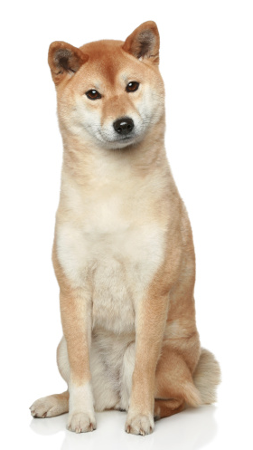

Personal Media Biography
| Name | Description | Audio file and source link |
|---|---|---|
| Birds | The most happy sound. | 🔗 |
| Rain | The most relaxing sound. | 🔗 |
| Rock | The feelgood song. | 🔗 |
| Breed | Description | Image and source link |
|---|---|---|
| Beagle | Beagles were originally meant to be hunting dogs. They are the perfect family dog for an active family. | 🔗 |
| Jack russel | Jack russel terriers are very smart and social. They have a lot of energy. | 🔗 |
| Shiba | Shibas are the most curious breed, they can be a bit shy but are also make a good family dog. |  🔗 |
{kind=link}
{kind=link}
| Name | Description | Embedded file and source link |
|---|---|---|
| Ice skating | Vincent Zhou ice skating to Jojis song called Dancing in the dark. It is a video to watch when lacking inspiration or motivation. | 🔗 |
| Pet otters | Hana and Kotaro are pet otters and I think they are so cute and funny. They are perfect to look at when you are feeling a little down. | 🔗 |
| Vacuum chamber pickles | The Action Lab channel makes all kinds of physics and chemistry laborations that can often be helpful in everyday life. | 🔗 |